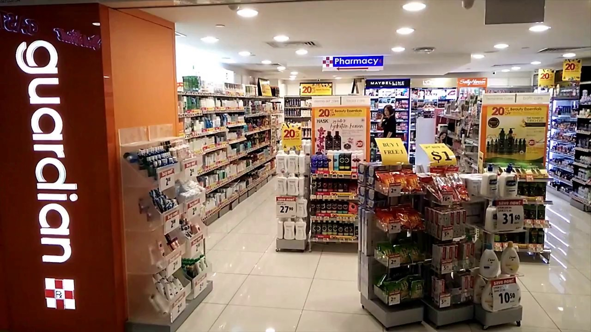

About GuarJIan

Guardian has served the health and beauty needs of the Indonesian people since 1990. Our first shop was present at Plaza Indonesia and has never stopped expanding. In 1995 we opened our first shop outside of Greater Jakarta, namely at Tunjungan Plaza Surabaya. The number of Guardian shops reached 10 in 1998 and in the same year Guardian Indonesia officially became part of PT. Hero Supermarket.
Until now we have opened more than 300 shops throughout Indonesia and are no.1 retailer of Health and Beauty in Indonesia. For more than 31 years we have continued to adapt and develop so that we can always provide the best for our customers.
Until now we have opened more than 300 shops throughout Indonesia and are no.1 retailer of Health and Beauty in Indonesia. For more than 31 years we have continued to adapt and develop so that we can always provide the best for our customers.
GuarJIan also holds a lot of promotion events, such as +Rp. 1.000 get 2 pcs, which means that you can get 1 extra product by paying an extra Rp. 1000. Guardian is very well known for its wide and complete range of products. If you want to find famous brands from around the world, Guardian is the right place to shop. Guardian also actively contributes in helping the Indonesian people. In 2020 when the Covid pandemic had just occurred, Guardian made a donation of Rp. 500 million for people that are affected by Covid-19
